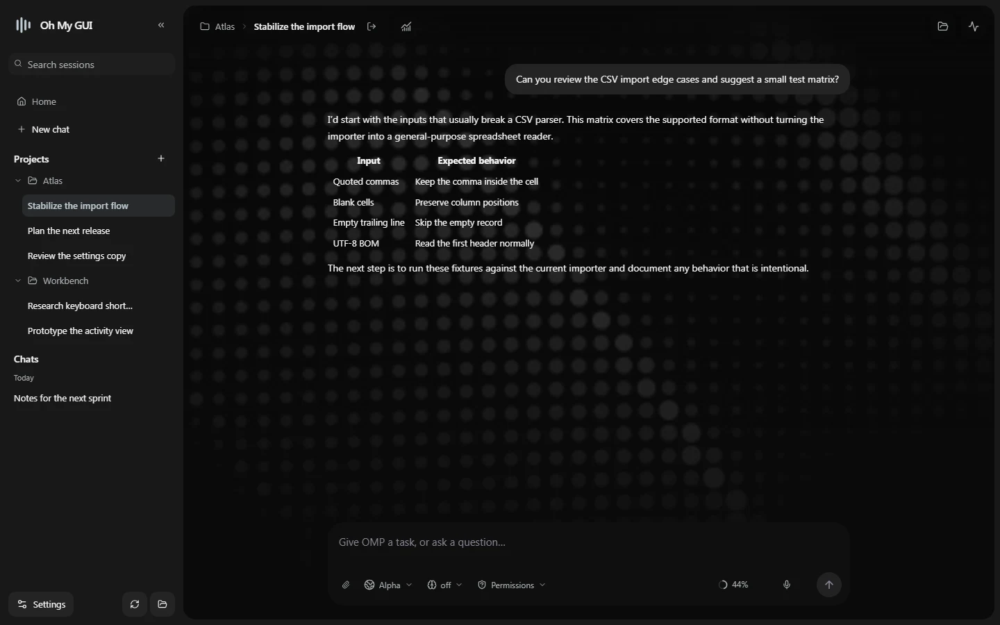
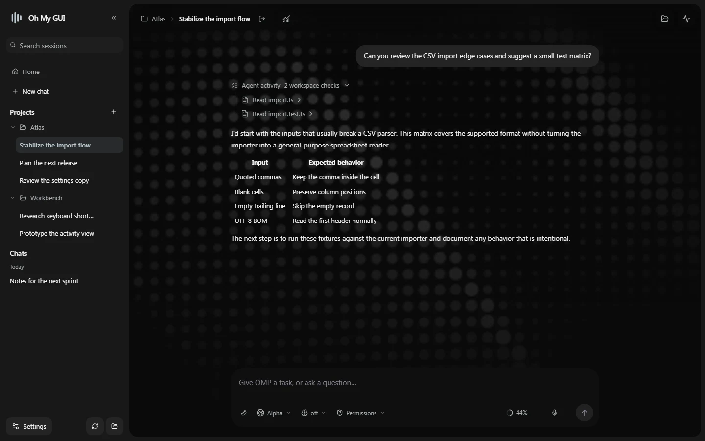
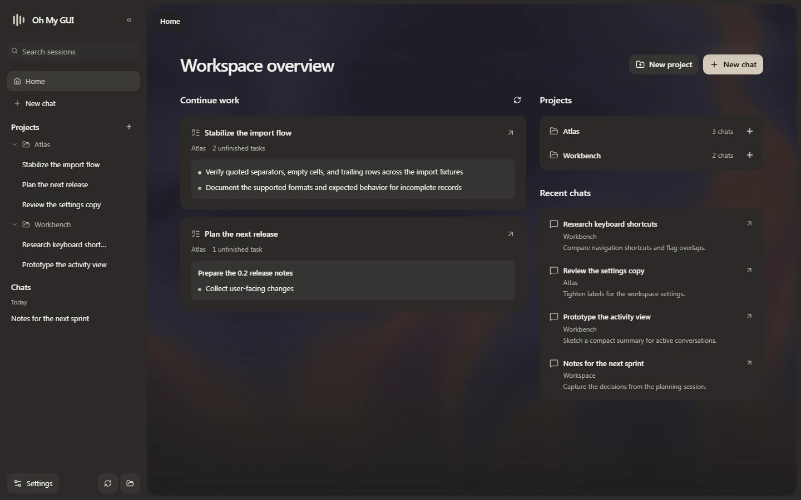
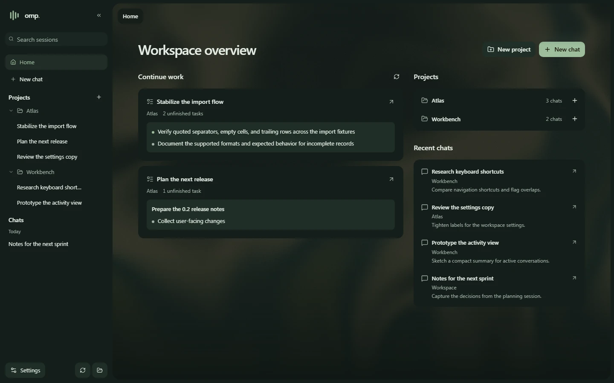
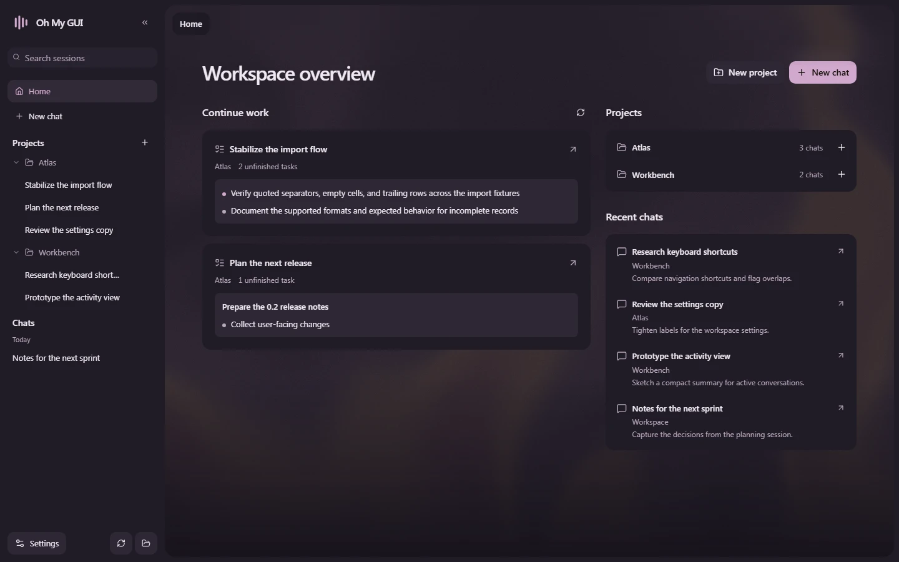

Blazingly fast and
your omp setup stays!
Oh My GUI connects to your local Oh My Pi runtime. Your providers, models, and everything else is already connected automatically!
Built with Tauri, ram and cpu usage stays low and is negligible to the OMP terminal usage.
Memory usage
- OMG 240 MB
- Others (Claude Code, Codex, etc.)
The workspace
Everything stays familiar as you know it



Plenty of animated themes to choose from
 Carbon
Carbon
Ash Steel
Steel
Forest Midnight
Midnight
Plum Paper
PaperInfinite customization options
Change backgrounds, fonts, icons, accents, and glass effects in the appearance page. All for free.
The interactive preview is available in the built site.